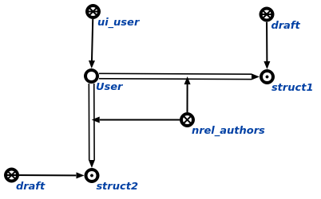

Задачей агента поиска черновиков, разработанных конкретным разработчиком является поиск черновиков, разработанных указанным разработчиком. Данный агент инициируется при условии появления в памяти вопросной конструкции, соответствующей действию. поиск всех черновиков, разработанных конкретным разработчиком. На вход данному агенту подается пользователь. Возможные результаты работы агента:
- Если на вход агенту пришел не знак пользователя, то генерируется сообщение об ошибке (Wrong parameter! It must be user sign(element of ui_user)).
- Если в результате поиска черновики, разработанные конкретным разработчиком, не были найдены, то генерируется сообщение "The search hasn't given any results".
- Если в результате поиска черновики, разработанные конкретным разработчиком, были найдены, то выводятся все найденные черновики. Пример результата работы агента представлен на рисунке.
